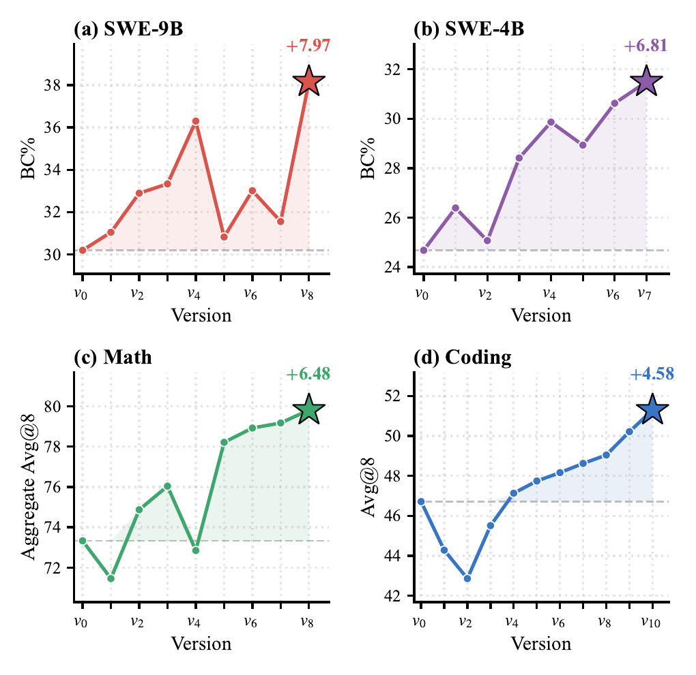

Co-Evolving LLM Policies and Training Harnesses
for Autonomous Agentic Reinforcement Learning
1Anonymous Institution 2Anonymous Industry Lab 3Anonymous Industry Lab 4Anonymous Institution
Autonomous LLM training is often framed as recipe search, which leaves the training harness largely static. This limitation sharpens in agentic RL, where shifting bottlenecks and scalar rewards mask diverse failure modes. We introduce EvoTrainer, an autonomous training framework that co-evolves LLM policies and training-side harnesses through empirical feedback: it diagnoses rollout-level evidence, revises diagnostics, backtests interventions, and accumulates reusable skills. Evaluated on mathematical reasoning, competitive-programming code generation, and repository-level software engineering, EvoTrainer matches or exceeds the human-engineered RL references under the same data, codebase, and evaluation protocol, with the largest gain on long-horizon agentic SWE (+4.39 BC% over the human baseline).
EvoTrainer autonomously evolves a SWE agent across 8 versions, rejecting failed branches and accumulating improvements that exceed the human-engineered RL baseline.
EvoTrainer adapts to domain-specific bottlenecks rather than applying a single universal recipe:
The retained strategies diverge substantially across domains, reflecting different bottleneck structures rather than a single fixed RL template.

Figure. Per-version score trajectories on the promoted path for each training condition. Stars mark the final retained version. Each domain's trajectory reflects a distinct evolution path shaped by its unique diagnostic bottlenecks.
Watch EvoTrainer autonomously diagnose, explore, reject failed branches, and evolve a SWE agent from 30.19% to 38.16% BC% across 8 versions.
EvoTrainer achieves the strongest score in every reported column across Math, Coding, and SWE.
| Method | SWE Avg@8 BC% | Math Avg@8 | Coding Avg@8 | |||
|---|---|---|---|---|---|---|
| 4B | 9B | AIME 24 | AIME 25 | CNMO 24 | ||
| Reference Configurations | ||||||
| Base model (no RL) | 24.68 | 30.19 | 77.50 | 67.50 | 75.00 | 46.71 |
| Human-engineered RL | 31.17 | 33.77 | 80.83 | 71.67 | 77.78 | 50.71 |
| AutoResearch | 28.41 | 33.33 | 78.33 | 70.42 | 78.47 | 45.51 |
| Algorithmic Baselines | ||||||
| GSPO + Clip-Higher | 24.84 | 31.97 | 79.17 | 70.00 | 76.39 | 47.86 |
| GRPO + Clip-Higher | 25.49 | 32.79 | 80.00 | 69.58 | 79.17 | 48.57 |
| RAGEN v1 Filtering | 29.87 | 32.89 | 80.42 | 70.83 | 77.78 | 49.04 |
| RAGEN v2 SNR Filtering | 30.03 | 35.74 | 81.67 | 72.50 | 80.56 | 49.86 |
| Group-Variance Filtering | 29.06 | 32.31 | 78.75 | 68.75 | 76.39 | 48.21 |
| EvoTrainer | ||||||
| EvoTrainer best | 31.49 +6.81 | 38.16 +7.97 | 84.17 +6.67 | 73.33 +5.83 | 81.94 +6.94 | 51.29 +4.58 |
@article{chen2025evotrainer,
title = {EvoTrainer: Co-Evolving LLM Policies and Training
Harnesses for Autonomous Agentic Reinforcement Learning},
author = {Chen, Guhong and Shi, Yingcheng and Li, Yongbin and
Li, Binhua and Xu, Xander and Wei, Hu and
Ni, Shiwen and Yang, Min and Ye, Jieping},
journal = {arXiv preprint arXiv:2606.03108},
year = {2025}
}